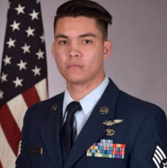

Military veteran with combat experience and a diverse range of translatable, hands-on skills in leadership, technology, and operations. Over 8 years of proven leadership, management, and operational experience in high-stakes, high-stress environments. Knowledgeable in military intelligence, operations management, radio communications, and information technology. Currently developing skills in computer programming languages including Python, C++, C#, Ruby, HTML, and JavaScript, with a focus on applying technical problem-solving to real-world challenges.
Well-traveled and culturally adaptable, with an informed sensitivity to global perspectives and teamwork across diverse environments. Certified Department of Defense Volunteer Victim Advocate for Sexual Assault Prevention & Response. Formerly held a TS/SCI security clearance (since 2017).
Web Developement Fundamentals Certification
March 2026Software Engineering Technology (GPA: 3.4)
March 2024 – PresentComputer Science
September 2023 – March 2024Python, SQL, DevOps
April 2023 – July 2023Intelligence Technologies (Associate’s Degree)
October 2015 – February 2023Arabic Language Studies
October 2015 – February 2017